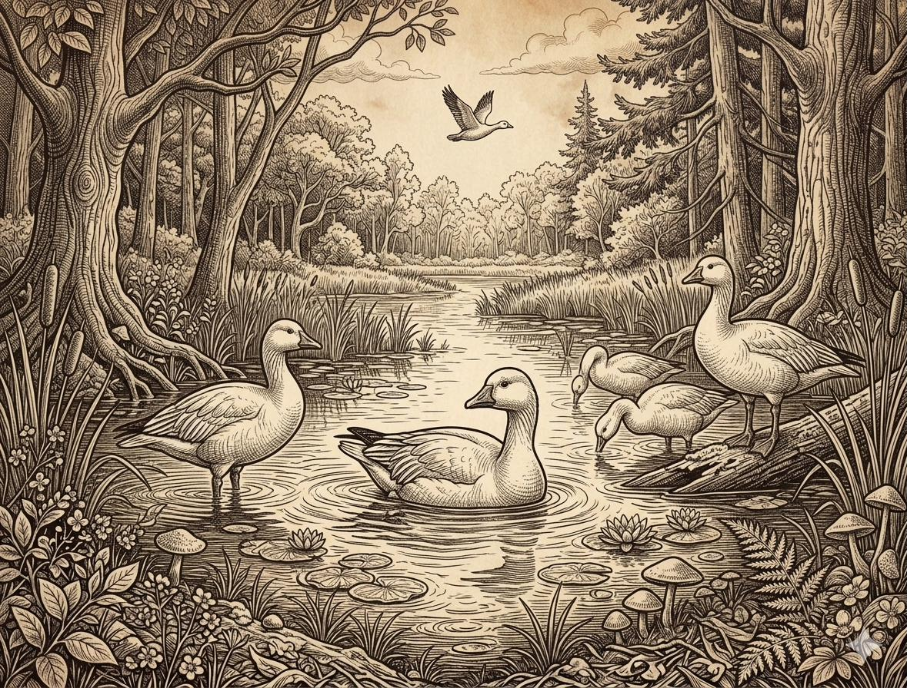
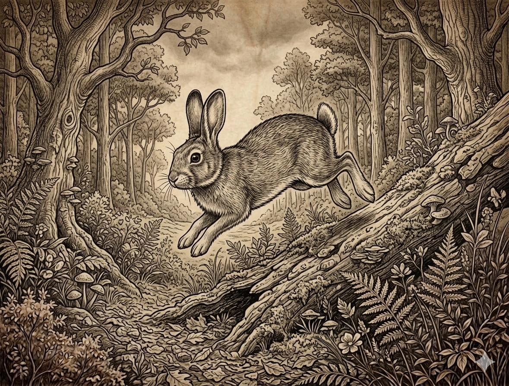

Know Your Prey
A definitive digital record of huntable wildlife across Washington's diverse ecosystems—from the Olympic rainforests to the high desert of the Columbia Basin.
01. Deer & Big Game
11 Species Tracked02. Upland Birds
9 Species Tracked03. Waterfowl
5 Species Groups
The Pacific Flyway funnels millions of birds through Washington's waterways. From the flooded grain fields of the Basin to the saltwater bays of the Sound, the waterfowl hunting here is world-class.
04. Small Game & Predators
4 Species Groups
Small game hunting provides essential field experience and year-round engagement. Coyotes, bobcats, and rabbits are distributed across every county, offering unique challenges in every season.